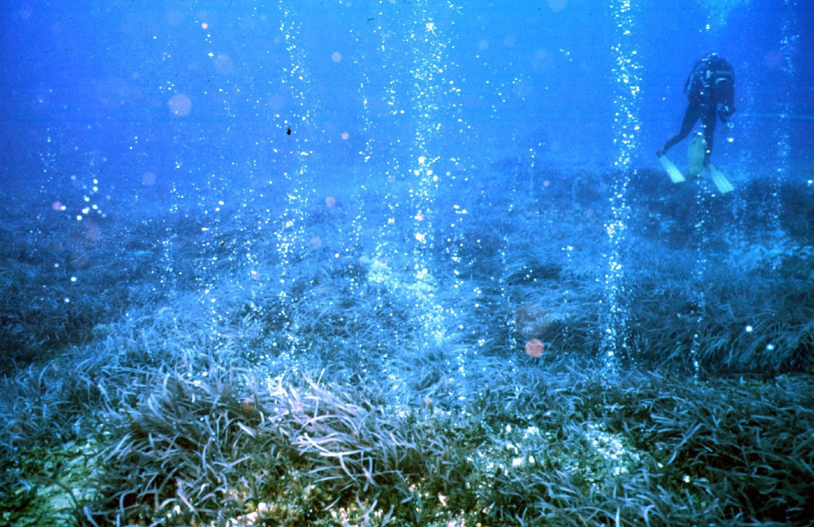

←
←
IMMERSA NEL CUORE DEL MEDITERRANEO E PLASMATA NEI MILLENNI DALLE FORZE DEL VENTO E DEL FUOCO, QUESTA PERLA NERA RAPPRESENTA UN PUNTO D'INCONTRO UNICO TRA DUE CONTINENTI.
Il Monte Marsili è il vulcano più grande d'Europa, ma nessuno lo ha mai visto: si trova completamente sommerso nel Mar Tirreno, a nord delle Isole Eolie. È lungo 70 km, largo 30 e alto 3.000 metri dal fondale. È considerato pericoloso perché una sua eventuale eruzione potrebbe innescare un maremoto che colpirebbe le coste del Tirreno meridionale.
| Stato | 🔵 Attivo sommerso |
| Regione | Mar Tirreno |
| Paese | Italia |
| Eruzioni storiche | sconosciute |
| Parco naturale | NO |
